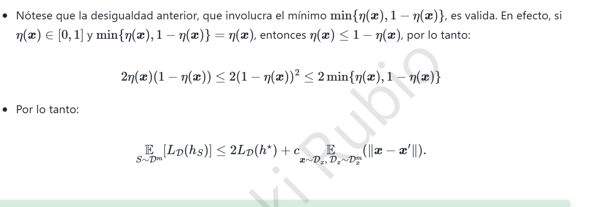

2. K-NN · Caso \(\min\{\eta,1-\eta\}=1-\eta\)

2.1 Desigualdad a demostrar
Con \(\eta=\eta(x)\in[0,1]\), el resultado requerido es
La demostración es por casos, puesto que el término mínimo cambia en \(\eta=1/2\).
Caso A: \(0\le\eta\le 1/2\)
Aquí \(\eta\le 1-\eta\); por definición, el mínimo es \(\eta\). Además, \(1-\eta\le1\). Como \(\eta\ge0\),
Caso B: \(1/2\le\eta\le1\) — el caso solicitado para el bono
Ahora \(1-\eta\le\eta\), de modo que el mínimo es \(1-\eta\). Dado que \(\eta\le1\) y \(2(1-\eta)\ge0\), se puede multiplicar sin invertir el signo:
En \(\eta=1/2\) ambos casos coinciden y la desigualdad también se cumple. Queda probada para todo \(\eta\in[0,1]\).
2.2 Corrección de la cadena de desigualdades de la nota
En las diapositivas aparece el paso \(2\eta(1-\eta)\le2(1-\eta)^2\le 2\min\{\eta,1-\eta\}\). Esa cadena no es universalmente válida. Por ejemplo, si \(\eta=0.1\), \((1-\eta)^2=0.81>0.1\) y falla la segunda parte. Si \(\eta=0.8\), \(2\eta(1-\eta)=0.32>2(1-\eta)^2=0.08\) y falla la primera.
La conclusión sí es correcta; lo equivocado es el paso intermedio. El argumento anterior prueba cada caso mediante \(\eta\le1\) o \(1-\eta\le1\).
2.3 Aplicación al límite de error de un vecino
Sea \(h_S\) el clasificador 1-NN, y \(X'\) su vecino más próximo a \(X\). Denotemos \(\eta'=\eta(X')\). Bajo independencia condicional de las etiquetas, la probabilidad de desacuerdo es
Sumamos y restamos \(2\eta(1-\eta)\):
Como \(|1-2\eta|\le1\), queda
Si la función \(\eta\) es \(c\)-Lipschitz con respecto a la distancia \(\rho\), entonces \(|\eta'-\eta|\le c\rho(X,X')\). Tomamos la esperanza y usamos la desigualdad ya demostrada:
Lectura: la cota tiene un componente debido al error irreducible de Bayes y otro que depende de la distancia del vecino más cercano. Cuando aumenta la densidad de observaciones cercanas, puede reducirse el segundo componente bajo los supuestos del teorema.